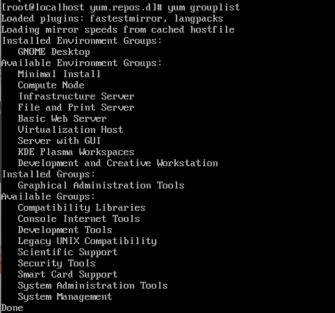

问题
centos7刚安装后没有网络，使用ip addr查看发现存在网卡ens33但是没有ip地址
解决方法：
1 | vi /etc/sysconfig/network-scripts/ifcfg-ens33 |
ONBOOT选项的意思是指明在系统启动时是否激活网卡。
centos更换源
yum需要一个yum库，也就是yum源。默认情况下，CentOS就有一个yum源。在/etc/yum.repos.d/目录下有一些默认的配置文件。
首先要找一个yum库（源），然后确保本地有一个客户端（yum这个命令就是客户端），由yum程序去连接服务器。连接的方式是由配置文件决定的。通过编辑/etc/yum.repos.d/CentOS-Base.repo文件，可以修改设置。
更换为阿里的源
1 | # 更换源要注意自己的系统版本 |
重新加载yum
1 | yum clean all |
Centos安装GNOME桌面环境
1 | yum groupinstall "X Window System" |
install和groupinstall
- groupinstall就像打包安装，会自动根据安装包名，将许多个程序安装，如安装“MySQL Database”这个安装包里面包括了mysql,mysql-server,mysql-bench
- install 就指定安装其中一个
可以通过yum grouplist查看当前的”安装包”列表

其他：
sysconfig目录下面包含了一些系统的配置
sysconfig/network-scripts/下面包含了网卡的一些操作脚本，如每个网卡的配置信息和ifup、ifdown等

每一个网卡在sysconfig/network-scripts都有一个对应的文件